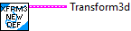
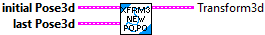
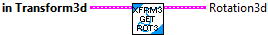
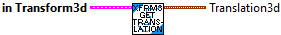
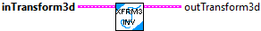

Constructs the identity transform -- maps an initial pose to itself.
Parameters:
-- none --
Result:
- transform3d -- TRANSFORM3d data structure

Constructs the transform that maps the initial pose to the final pose.
Parameters:
- initial pose3d -- The initial pose for the transformation.
- last pose3d -- The final pose for the transformation.
Returns:
- Transform 3d -- The TRANSFORM3d data structure
Constructs a transform with the given translation and rotation components.
Parameters:
- translation3d -- Translational component of the transform.
- rotation3e -- Rotational component of the transform.
Result:
- transform3d -- TRANSFORM3d data structure

Divides the transform3d by the scalar.
Parameters:
- IN TRANSFORM3d -- This TRANSFORM data structure
- SCALAR -- The scalar value to divide the transform by
Results:
- OUT TRANSFORM3d -- The multiplied transform data structure

Checks equality between this Transform3d and another Transform3d.
Parameters:
- IN TRANSFORM3d -- This TRANSFORM data structure
- OTHER TRANSFORM3d -- The other TRANSFORM to compare
Results:
- EQUALS - Returns TRUE when both TRANSFORMs are the same.

Returns the rotational3d component of the transformation3d.
Parameters:
- IN TRANSFORM3d -- The TRANSFORM3d data structure
Returns:
- ROTATION3d -- The rotational component of the transform.

Returns the translation3d component of the transformation3d.
Parameters:
- IN TRANSFORM3d -- THis TRANSFORM data structure
Returns:
- TRANSLATION3d -- The translational component of the transform.

Returns the X, Y, Z elements of the translation3d component of the transformation3d.
Parameters:
- IN TRANSFORM3d -- THis TRANSFORM data structure
Returns:
- X - The X element of the translational component of the transform.
- Y - The Y element of the translational component of the transform.
- Z - The Z element of the translational component of the transform.

Invert the transformation3d. This is useful for undoing a transformation.
Parameters:
- IN TRANSFORM3D -- This TRANSFORM3d data structure
Results:
- OUT TRANSFORM3D -- The inverted transformation.

Composes two transformations.
Parameters:
- IN TRANSFORM3d -- This TRANSFORM data structure
- other Transform3d -- The transform to compose with this one.
Results:
- OUT TRANSFORM3d -- The composition of the two transformations.

Scales the transform3d by the scalar.
Parameters:
- IN TRANSFORM3d -- This TRANSFORM data structure
- SCALAR -- The scalar value to multiply the transform by
Results:
- OUT TRANSFORM3d -- The multiplied transform data structure